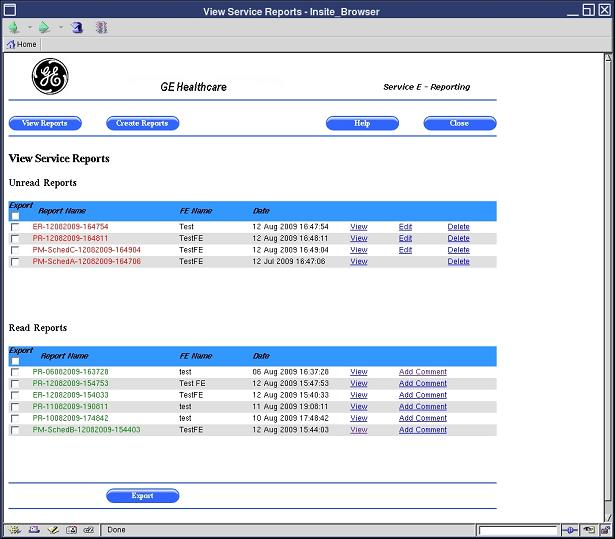

E-Reporting Tool
Prerequisites
Overview
The E-Reporting tool is a web-based application that allows for better communication between the customer and the GE service engineer. Only service engineers enter information in this tool; customers do not. When a Field Engineer (FE) or Online Engineer (OLE) provides service at a customer site, the E-Reporting tool is used to document issues found or service performed. It is also used to provide recommendations for customer follow-up; for example, suggesting that the customer improve room temperature. After the service engineer has created a service report, the customer can view and print the report at any time.
The reports can be viewed in the tool, and can be exported to media such as DVD, CD, or USB drive. Each service report includes the hospital name, system ID, system name, and the date it was generated. Service reports for the last three years are maintained on the system. Reports older than three years are automatically deleted.
There are four types of reports in the E-Reporting tool:
-
Emergency and Routine Service Report The FE primarily uses this page to communicate to the customer any information from emergency or routine service calls. This report is created, for example, when an FE or OLE is called to the site to resolve an emergency site issue and wants to maintain a log of the discussion that occurred between site personnel and the FE. The service engineer is also able to communicate with the customer about work that was done after hours at that site.
-
Planned Maintenance Service Report The FE primarily uses this page to communicate to the customer any PM information from planned maintenance service calls. An FE or OLE may create this report to communicate to site personnel about the details of planned maintenance that was performed onsite by GE. The report could also contain performed PM results and any site-related issues that the customer should correct or that GE needs to fix.
-
Predictive Maintenance Service Report The OLE primarily uses this page to communicate to the customer any information from predictive maintenance service calls. This report may be created by an FE or OLE when performing proactive work to remedy a problem that will occur onsite if site conditions are not corrected. This may involve site-related issues that could impact product performance. Examples include temperature and humidity that is out of specification, or MCQA results that indicate a problem with site coils.
-
IIS Check The FE primarily uses this page to communicate to the customer any Installation information from installation service calls. This report is created based on the result of Installation in Spec (IIS) to communicate the site personnel about the details of installation that was performed by GE. This report contains the IIS check results and the service comments field for service engineer to write down comments for installation.
1 Opening E-Reporting Tool
Procedure
- Insert the Service Key in the host computer USB port. A service key is needed to access the MR Service Desktop Browser.
- Click Service Desktop Manager and select Service Browser. The Common Service Desktop home page opens. This home page is the FE Cockpit top-level page.
Figure 1. FE Cockpit Home Page

- Click the E-Reporting link on the FE Cockpit Home Page.
The E-Reporting View Service Reports page is displayed, containing several options for viewing and deleting reports.
Figure 2. View Service Reports Page

2 Viewing List of Service Reports
When the E-Reporting tool is opened, a list of existing reports automatically displays.
Procedure
- Open the View Service Reports page.
- A list of unread reports is shown at the top of the page, and a list of read reports is shown at the bottom of the page. When a service engineer creates a report, it goes to the Unread Reports list. When a customer opens the report, it moves to the Read Reports list.
3 Viewing Specific Service Reports
An FE can view a particular report by clicking the View link for that report.
Procedure
- Open the View Service Reports page.
- Click the View link for the report you want to view.
Figure 3. Selecting View Link

Figure 4. Viewing Service Report

- To return to the list of reports, click the View Reports button at the top of the page, or click Cancel.
4 Printing Service Reports
FEs can print service reports. The service report is displayed as a PDF file for printing purposes. The report is printed using either the XPDF tool (Linux version of PDF) on the local system, or Adobe Acrobat when accessed remotely through the Integrated Service Desktop (ISD).
Procedure
- On the View Service Reports page, click the View link for the report you want to print.
The corresponding report is displayed in the View Report page.
Figure 5. Viewing Service Report to Print
- Click the Print button at the bottom of the View Report page.
-
If you print locally from the system, an XPDF page displays. To print, click the printer icon in the toolbar at the bottom of the XPDF page.
Figure 6. Printing Locally with XPDF Tool

-
If you print remotely from the Integrated Service Desktop (ISD), an Adobe Acrobat page or similar PDF reader program displays. To print, click the Print icon in the toolbar at the top of the page, or select File > Print from the menu bar at the top of the page. Click OK in the Print Dialog box.
Figure 7. Printing Remotely with Adobe Acrobat Using Print Icon

-
To print a service report, a network printer must be configured on the scanner. This printer must be set up to print from Adobe Acrobat, Adobe Reader, or a similar PDF program.
5 Adding Comments to Service Reports
An FE can only add comments to read reports. After you add comments, the report is moved to the Unread section.
Procedure
- notice
- On the View Service Reports page, click the Add Comments link for the report to which you are adding comments.
- In the Comments field, type the comments.
- Click Save at the bottom of the page.
 |
6 Exporting Service Reports to Media (in PDF Format)
A service engineer can export a report to media, such CD, DVD, or USB drive. The report is exported as a PDF file.
Procedure
- Open the View Service Reports page (see Opening E-Reporting Tool).
- On the View Service Reports page, click the check box for the report you want to export.
- Insert the CD, DVD, or USB drive to which you are exporting the report. Make sure to insert the media in the proper port/drive.
- Click Export at the bottom of the page.
- In the media selection dialog box, select the type of media to which you are exporting the report (CD, DVD, or USB drive).
- Click OK.
7 Deleting Service Reports
An FE can delete only an unread report.
Procedure
- On the View Service Reports page, click the Delete link for the report you want to delete.
A dialog box is displayed, asking “Do you want to Delete this report?”
- To delete, click OK.